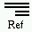

DbException::get_errno |
 |
#include <db_cxx.h>int DbException::get_errno() const;
A DbException object contains an informational string and an errno. The errno can be obtained by using DbException::get_errno. The informational string can be obtained by using DbException::what.